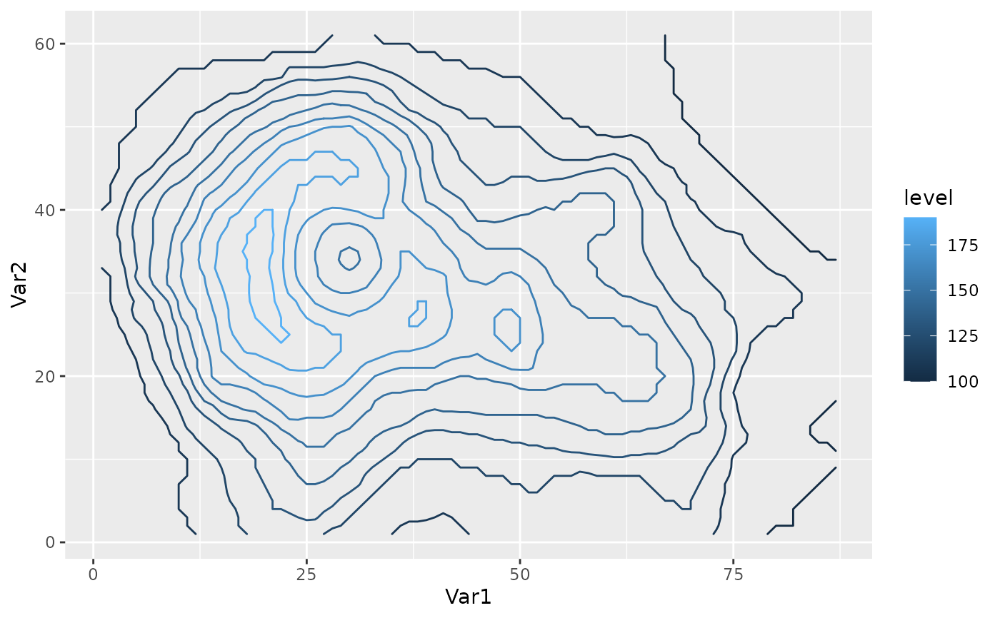
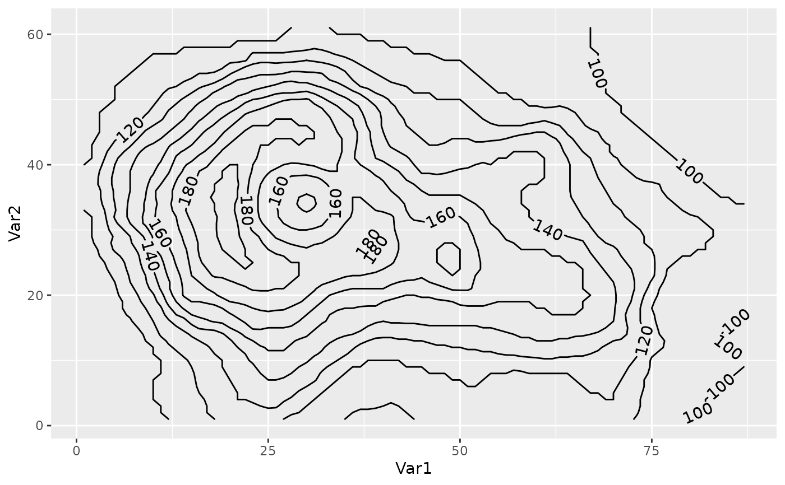

Similar to ggplot2::geom_contour but it can label contour lines,
accepts accepts a function as the breaks argument and and computes
breaks globally instead of per panel.
geom_contour2(
mapping = NULL,
data = NULL,
stat = "contour2",
position = "identity",
...,
lineend = "butt",
linejoin = "round",
linemitre = 1,
breaks = MakeBreaks(),
bins = NULL,
binwidth = NULL,
global.breaks = TRUE,
na.rm = FALSE,
na.fill = FALSE,
skip = 1,
margin = grid::unit(c(1, 1, 1, 1), "pt"),
label.placer = label_placer_flattest(),
show.legend = NA,
inherit.aes = TRUE
)
stat_contour2(
mapping = NULL,
data = NULL,
geom = "contour2",
position = "identity",
...,
breaks = MakeBreaks(),
bins = NULL,
binwidth = NULL,
kriging = FALSE,
global.breaks = TRUE,
na.rm = FALSE,
na.fill = FALSE,
show.legend = NA,
inherit.aes = TRUE
)Set of aesthetic mappings created by aes(). If specified and
inherit.aes = TRUE (the default), it is combined with the default mapping
at the top level of the plot. You must supply mapping if there is no plot
mapping.
The data to be displayed in this layer. There are three options:
If NULL, the default, the data is inherited from the plot
data as specified in the call to ggplot().
A data.frame, or other object, will override the plot
data. All objects will be fortified to produce a data frame. See
fortify() for which variables will be created.
A function will be called with a single argument,
the plot data. The return value must be a data.frame, and
will be used as the layer data. A function can be created
from a formula (e.g. ~ head(.x, 10)).
The statistical transformation to use on the data for this
layer, either as a ggproto Geom subclass or as a string naming the
stat stripped of the stat_ prefix (e.g. "count" rather than
"stat_count")
Position adjustment, either as a string naming the adjustment
(e.g. "jitter" to use position_jitter), or the result of a call to a
position adjustment function. Use the latter if you need to change the
settings of the adjustment.
Other arguments passed on to layer(). These are
often aesthetics, used to set an aesthetic to a fixed value, like
colour = "red" or size = 3. They may also be parameters
to the paired geom/stat.
Line end style (round, butt, square).
Line join style (round, mitre, bevel).
Line mitre limit (number greater than 1).
One of:
A numeric vector of breaks
A function that takes the range of the data and binwidth as input and returns breaks as output
Number of evenly spaced breaks.
Distance between breaks.
Logical indicating whether breaks should be computed for the whole
data or for each grouping.
If FALSE, the default, missing values are removed with
a warning. If TRUE, missing values are silently removed.
How to fill missing values.
FALSE for letting the computation fail with no interpolation
TRUE for imputing missing values with Impute2D
A numeric value for constant imputation
A function that takes a vector and returns a numeric (e.g. mean)
number of contours to skip for labelling
(e.g. skip = 1 will skip 1 contour line between labels).
the margin around labels around which contour lines are clipped to avoid overlapping.
a label placer function. See label_placer_flattest().
logical. Should this layer be included in the legends?
NA, the default, includes if any aesthetics are mapped.
FALSE never includes, and TRUE always includes.
It can also be a named logical vector to finely select the aesthetics to
display.
If FALSE, overrides the default aesthetics,
rather than combining with them. This is most useful for helper functions
that define both data and aesthetics and shouldn't inherit behaviour from
the default plot specification, e.g. borders().
The geometric object to use to display the data, either as a
ggproto Geom subclass or as a string naming the geom stripped of the
geom_ prefix (e.g. "point" rather than "geom_point")
Logical indicating whether to perform ordinary kriging before contouring. Use this if you want to use contours with irregularly spaced data.
geom_contour2 understands the following aesthetics (required aesthetics are in bold):
Aesthetics related to contour lines:
x
y
z
alpha
colour
group
linetype
size
weight
Aesthetics related to labels:
label
label_colour
label_alpha
label_size
family
fontface
height of contour
Other ggplot2 helpers:
DivideTimeseries(),
MakeBreaks(),
WrapCircular(),
geom_arrow(),
geom_contour_fill(),
geom_label_contour(),
geom_relief(),
geom_streamline(),
guide_colourstrip(),
map_labels,
reverselog_trans(),
scale_divergent,
scale_longitude,
stat_na(),
stat_subset()
Other ggplot2 helpers:
DivideTimeseries(),
MakeBreaks(),
WrapCircular(),
geom_arrow(),
geom_contour_fill(),
geom_label_contour(),
geom_relief(),
geom_streamline(),
guide_colourstrip(),
map_labels,
reverselog_trans(),
scale_divergent,
scale_longitude,
stat_na(),
stat_subset()
data.table::setDTthreads(1)
library(ggplot2)
# Breaks can be a function.
ggplot(reshape2::melt(volcano), aes(Var1, Var2)) +
geom_contour2(aes(z = value, color = after_stat(level)),
breaks = AnchorBreaks(130, binwidth = 10))

# Add labels by supplying the label aes.
ggplot(reshape2::melt(volcano), aes(Var1, Var2)) +
geom_contour2(aes(z = value, label = after_stat(level)))
ggplot(reshape2::melt(volcano), aes(Var1, Var2)) +
geom_contour2(aes(z = value, label = after_stat(level)),
skip = 0)
# Use label.placer to control where contours are labelled.
ggplot(reshape2::melt(volcano), aes(Var1, Var2)) +
geom_contour2(aes(z = value, label = after_stat(level)),
label.placer = label_placer_n(n = 2))

# Use the rot_adjuster argument of the placer function to
# control the angle. For example, to fix it to some angle:
ggplot(reshape2::melt(volcano), aes(Var1, Var2)) +
geom_contour2(aes(z = value, label = after_stat(level)),
skip = 0,
label.placer = label_placer_flattest(rot_adjuster = 0))